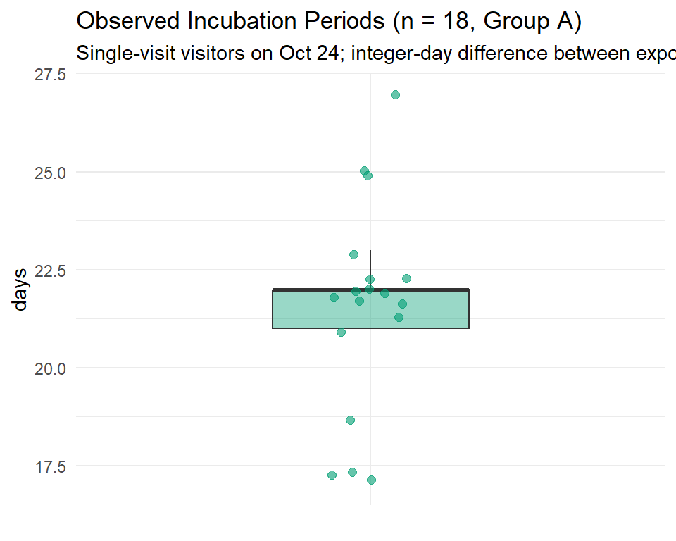
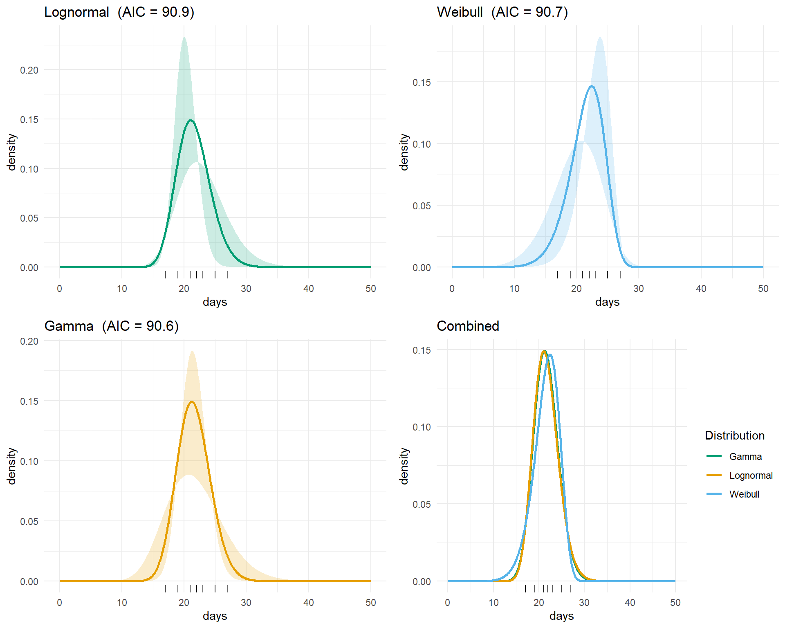
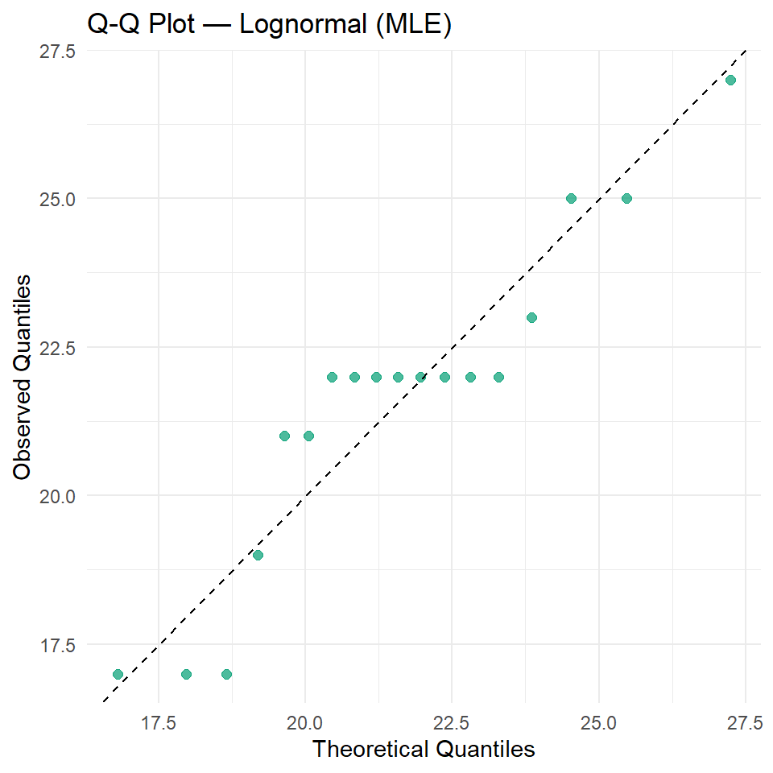
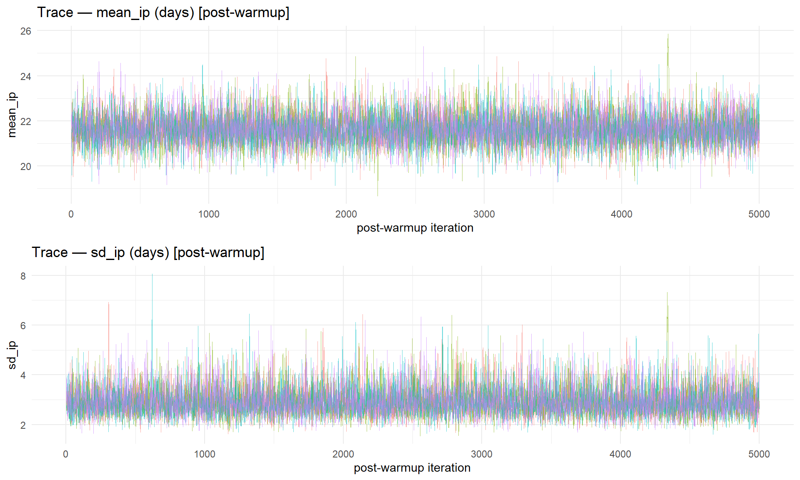
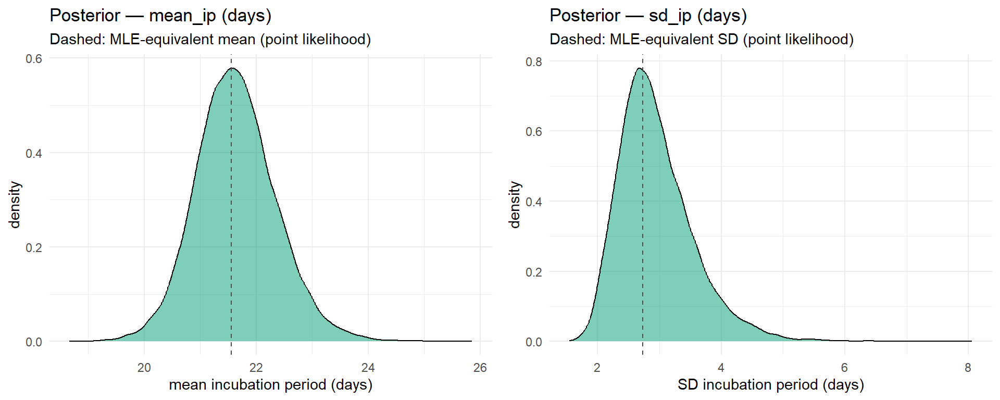
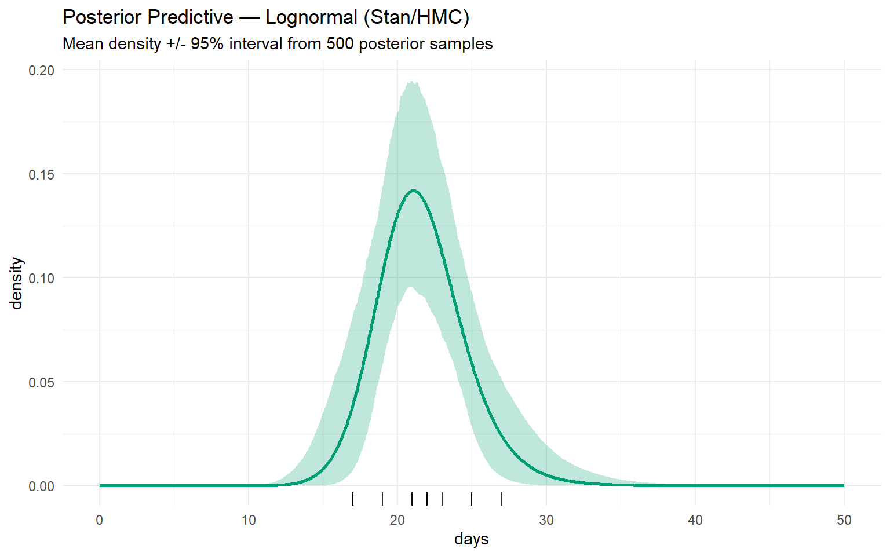

Incubation periods were recorded from 18 laboratory workers (Group A: single-visit external visitors who attended the department on 24 Oct 1961 only) who visited the infected department exactly once, providing a single point-identified exposure date.
Because both the exposure date and the symptom-onset date were only recorded to the calendar day, the true continuous incubation period is never observed exactly — it is doubly interval-censored. Each recorded integer \(k\) represents a true incubation \(T \in (k - 1,\, k + 1)\). This motivates an interval-censored likelihood rather than treating the integer counts as exact point observations (used in Section 3).
Source: Kulagin, Fedorova & Ketiladze (1962), Journal of Microbiology, Epidemiology and Immunology, 33(10), 121–126. https://www.cabidigitallibrary.org/doi/full/10.5555/19632701583
inc <- c(rep(17, 3), 19, rep(21, 2), rep(22, 8), 23, rep(25, 2), 27)
cat("n =", length(inc), "\n")## n = 18cat("Range:", min(inc), "-", max(inc), "days\n")## Range: 17 - 27 dayscat("Mean:", round(mean(inc), 1), " Median:", median(inc), "\n")## Mean: 21.6 Median: 22ggplot(data.frame(x = inc), aes(x = "", y = x)) +
geom_boxplot(
fill = "#009E73", alpha = 0.4, width = 0.4, outlier.shape = NA
) +
geom_jitter(width = 0.08, alpha = 0.6, color = "#009E73", size = 2) +
labs(
title = "Observed Incubation Periods (n = 18, Group A)",
subtitle = paste0(
"Single-visit visitors on Oct 24; ",
"integer-day difference between exposure and onset"
),
x = NULL, y = "days"
) +
theme_minimal()
Three parametric families are fitted via MLE with L-BFGS-B optimization. These use point observations for comparison; the interval-censored treatment is applied in Section 3.
ll_lnorm <- function(params, data) {
mu <- params[1]
sigma <- params[2]
if (sigma <= 0) return(Inf)
-sum(dlnorm(data, meanlog = mu, sdlog = sigma, log = TRUE))
}
fit_lnorm <- optim(
c(mean(log(inc)), sd(log(inc))), ll_lnorm, data = inc,
method = "L-BFGS-B", lower = c(-Inf, 0.001), hessian = TRUE
)
se_lnorm <- sqrt(diag(solve(fit_lnorm$hessian)))
ci_lnorm <- cbind(
fit_lnorm$par - 1.96 * se_lnorm,
fit_lnorm$par + 1.96 * se_lnorm
)
aic_lnorm <- 2 * 2 + 2 * fit_lnorm$value
ll_weib <- function(params, data) {
shape <- params[1]
scale <- params[2]
if (shape <= 0 || scale <= 0) return(Inf)
-sum(dweibull(data, shape = shape, scale = scale, log = TRUE))
}
fit_weib <- optim(
c(1, mean(inc)), ll_weib, data = inc,
method = "L-BFGS-B", lower = c(0.001, 0.001), hessian = TRUE
)
se_weib <- sqrt(diag(solve(fit_weib$hessian)))
ci_weib <- cbind(
fit_weib$par - 1.96 * se_weib,
fit_weib$par + 1.96 * se_weib
)
aic_weib <- 2 * 2 + 2 * fit_weib$value
ll_gamma <- function(params, data) {
shape <- params[1]
rate <- params[2]
if (shape <= 0 || rate <= 0) return(Inf)
-sum(dgamma(data, shape = shape, rate = rate, log = TRUE))
}
fit_gamma <- optim(
c(1, 1 / mean(inc)), ll_gamma, data = inc,
method = "L-BFGS-B", lower = c(0.001, 0.001), hessian = TRUE
)
se_gamma <- sqrt(diag(solve(fit_gamma$hessian)))
ci_gamma <- cbind(
fit_gamma$par - 1.96 * se_gamma,
fit_gamma$par + 1.96 * se_gamma
)
aic_gamma <- 2 * 2 + 2 * fit_gamma$valueci1_lo <- round(
c(ci_lnorm[1, 1], ci_weib[1, 1], ci_gamma[1, 1]), 3
)
ci1_hi <- round(
c(ci_lnorm[1, 2], ci_weib[1, 2], ci_gamma[1, 2]), 3
)
ci2_lo <- round(
c(ci_lnorm[2, 1], ci_weib[2, 1], ci_gamma[2, 1]), 3
)
ci2_hi <- round(
c(ci_lnorm[2, 2], ci_weib[2, 2], ci_gamma[2, 2]), 3
)
result <- data.frame(
Distribution = c("Lognormal", "Weibull", "Gamma"),
Parameters = c("meanlog, sdlog", "shape, scale", "shape, rate"),
Param1 = round(
c(fit_lnorm$par[1], fit_weib$par[1], fit_gamma$par[1]), 4
),
CI1 = paste0("[", ci1_lo, ", ", ci1_hi, "]"),
Param2 = round(
c(fit_lnorm$par[2], fit_weib$par[2], fit_gamma$par[2]), 4
),
CI2 = paste0("[", ci2_lo, ", ", ci2_hi, "]"),
AIC = round(c(aic_lnorm, aic_weib, aic_gamma), 2)
)
kable(result, align = "llrrrrc",
col.names = c(
"Distribution", "Parameters",
"Param 1", "95% CI", "Param 2", "95% CI", "AIC"
))| Distribution | Parameters | Param 1 | 95% CI | Param 2 | 95% CI | AIC |
|---|---|---|---|---|---|---|
| Lognormal | meanlog, sdlog | 3.0628 | [3.004, 3.121] | 0.1264 | [0.085, 0.168] | 90.88 |
| Weibull | shape, scale | 8.9965 | [5.89, 12.103] | 22.7147 | [21.482, 23.948] | 90.67 |
| Gamma | shape, rate | 64.0606 | [22.316, 105.805] | 2.9719 | [1.028, 4.916] | 90.56 |
Interpretation: AICs fall within ΔAIC < 2 across all three distributions. Lognormal is retained as the primary model. MLE uses point observations; the Bayesian model below uses the interval-censored likelihood.
freq <- seq(0, 50, length.out = 1000)
df_lnorm <- data.frame(
x = freq,
density = dlnorm(freq, fit_lnorm$par[1], fit_lnorm$par[2]),
ci_lower = dlnorm(freq, ci_lnorm[1, 1], ci_lnorm[2, 1]),
ci_upper = dlnorm(freq, ci_lnorm[1, 2], ci_lnorm[2, 2])
)
plnorm <- ggplot(df_lnorm, aes(x = x)) +
geom_ribbon(
aes(ymin = ci_lower, ymax = ci_upper),
fill = "#009E73", alpha = 0.2
) +
geom_line(aes(y = density), color = "#009E73", linewidth = 1) +
geom_rug(
data = data.frame(x = inc), aes(x = x),
inherit.aes = FALSE, sides = "b", alpha = 0.6
) +
labs(
title = paste0("Lognormal (AIC = ", round(aic_lnorm, 1), ")"),
x = "days", y = "density"
) +
theme_minimal()
df_weib <- data.frame(
x = freq,
density = dweibull(freq, fit_weib$par[1], fit_weib$par[2]),
ci_lower = dweibull(freq, ci_weib[1, 1], ci_weib[2, 1]),
ci_upper = dweibull(freq, ci_weib[1, 2], ci_weib[2, 2])
)
pweib <- ggplot(df_weib, aes(x = x)) +
geom_ribbon(
aes(ymin = ci_lower, ymax = ci_upper),
fill = "#56B4E9", alpha = 0.2
) +
geom_line(aes(y = density), color = "#56B4E9", linewidth = 1) +
geom_rug(
data = data.frame(x = inc), aes(x = x),
inherit.aes = FALSE, sides = "b", alpha = 0.6
) +
labs(
title = paste0("Weibull (AIC = ", round(aic_weib, 1), ")"),
x = "days", y = "density"
) +
theme_minimal()
df_gamma <- data.frame(
x = freq,
density = dgamma(freq, fit_gamma$par[1], fit_gamma$par[2]),
ci_lower = dgamma(freq, ci_gamma[1, 1], ci_gamma[2, 1]),
ci_upper = dgamma(freq, ci_gamma[1, 2], ci_gamma[2, 2])
)
pgamma_p <- ggplot(df_gamma, aes(x = x)) +
geom_ribbon(
aes(ymin = ci_lower, ymax = ci_upper),
fill = "#E69F00", alpha = 0.2
) +
geom_line(aes(y = density), color = "#E69F00", linewidth = 1) +
geom_rug(
data = data.frame(x = inc), aes(x = x),
inherit.aes = FALSE, sides = "b", alpha = 0.6
) +
labs(
title = paste0("Gamma (AIC = ", round(aic_gamma, 1), ")"),
x = "days", y = "density"
) +
theme_minimal()
df_combined <- data.frame(
x = rep(freq, 3),
density = c(
dlnorm(freq, fit_lnorm$par[1], fit_lnorm$par[2]),
dweibull(freq, fit_weib$par[1], fit_weib$par[2]),
dgamma(freq, fit_gamma$par[1], fit_gamma$par[2])
),
Distribution = rep(
c("Lognormal", "Weibull", "Gamma"), each = length(freq)
)
)
pcom <- ggplot(
df_combined, aes(x = x, y = density, color = Distribution)
) +
geom_line(linewidth = 1) +
geom_rug(
data = data.frame(x = inc), aes(x = x),
inherit.aes = FALSE, sides = "b", alpha = 0.6
) +
scale_color_manual(values = c("#009E73", "#E69F00", "#56B4E9")) +
labs(title = "Combined", x = "days", y = "density") +
theme_minimal()
grid.arrange(plnorm, pweib, pgamma_p, pcom, ncol = 2)
n <- length(inc)
probs <- (seq_len(n) - 0.5) / n
qq_df <- data.frame(
theoretical = qlnorm(probs, fit_lnorm$par[1], fit_lnorm$par[2]),
observed = sort(inc)
)
ggplot(qq_df, aes(x = theoretical, y = observed)) +
geom_point(color = "#009E73", alpha = 0.7, size = 2) +
geom_abline(slope = 1, intercept = 0, linetype = "dashed") +
labs(
title = "Q-Q Plot — Lognormal (MLE)",
x = "Theoretical Quantiles", y = "Observed Quantiles"
) +
theme_minimal()
\[T_{i} \sim \text{LogNormal}(\mu,\, \sigma), \quad i = 1, \ldots, N\]
where \(T_{i}\) is the true continuous incubation period of individual \(i\) (days).
The lognormal distribution has two distinct location summaries:
\[\text{Median}(T) = \exp(\mu), \qquad \mathbb{E}[T] = \exp\!\left(\mu + \frac{\sigma^{2}}{2}\right)\]
Reporting \(\mu\) directly implies the median, not the mean. When \(\sigma > 0\), the two quantities diverge by a factor of \(\exp(\sigma^{2}/2)\).
Let \(m = \mathbb{E}[T]\)
(mean_ip) and \(s =
\text{SD}(T)\) (sd_ip). The internal lognormal
parameters are recovered by:
\[\mu = \log(m) - \frac{1}{2}\,\log\!\left(1 + \frac{s^{2}}{m^{2}}\right)\]
\[\sigma = \sqrt{\,\log\!\left(1 + \frac{s^{2}}{m^{2}}\right)}\]
Both \(m\) and \(s\) are in days, allowing priors and credible intervals to be stated directly in the clinically interpretable scale.
For individual \(i\) with exposure window \([E_{L,i},\, E_{R,i}]\) and onset window \([O_{L,i},\, O_{R,i}]\) (all in calendar days), the continuous exposure time \(E \in (E_{L,i},\; E_{R,i} + 1)\) and onset time \(O \in (O_{L,i},\; O_{R,i} + 1)\), giving per-observation bounds:
\[T^{\text{lo}}_{i} = O_{L,i} - E_{R,i} - 1, \qquad T^{\text{hi}}_{i} = O_{R,i} - E_{L,i} + 1\]
The log-likelihood contribution is:
\[\ell(\theta \mid i) = \log\!\Bigl[ F_{\text{LN}}\!\left(T^{\text{hi}}_{i} \mid \mu, \sigma\right) - F_{\text{LN}}\!\left(T^{\text{lo}}_{i} \mid \mu, \sigma\right) \Bigr]\]
Summing over all \(N\) observations:
\[\ell(\theta \mid \mathbf{T}) = \sum_{i=1}^{N} \log\!\Bigl[ F_{\text{LN}}\!\left(T^{\text{hi}}_{i} \mid \mu, \sigma\right) - F_{\text{LN}}\!\left(T^{\text{lo}}_{i} \mid \mu, \sigma\right) \Bigr]\]
Group A special case (\(E_{L,i} = E_{R,i}\), \(O_{L,i} = O_{R,i}\)): \(T^{\text{lo}}_{i} = k_{i} - 1\), \(T^{\text{hi}}_{i} = k_{i} + 1\) — the fixed ±1 day window used throughout this analysis. The formulation generalizes without changes to cases with wider exposure or onset windows, should such data become available.
stan_code <- "
data {
int<lower=0> N;
// Per-case incubation bounds (days, real-valued).
// For Group A: T_lower = k - 1, T_upper = k + 1
// (k = integer onset - exposure day).
// For wider exposure windows: T_lower = O_L - E_R - 1,
// T_upper = O_R - E_L + 1.
vector<lower=0>[N] T_lower;
vector<lower=0>[N] T_upper;
}
parameters {
real<lower=0> mean_ip;
real<lower=0> sd_ip;
}
transformed parameters {
real mu = log(mean_ip)
- 0.5 * log(1.0 + square(sd_ip / mean_ip));
real sigma = sqrt(log(1.0 + square(sd_ip / mean_ip)));
}
model {
// Weakly informative priors -- to be updated after literature review.
// mean_ip ~ Normal(21, 7): centred near expected HFRS value.
// sd_ip ~ HalfNormal(5): <lower=0> enforces positivity.
mean_ip ~ normal(21, 7);
sd_ip ~ normal(0, 5);
// Interval-censored likelihood.
for (i in 1:N) {
target += log_diff_exp(
lognormal_lcdf(T_upper[i] | mu, sigma),
lognormal_lcdf(T_lower[i] | mu, sigma)
);
}
}
"Priors: mean_ip ~ Normal(21, 7),
sd_ip ~ HalfNormal(5) — weakly informative, centered near
the expected HFRS incubation period pending literature review.
Likelihood: doubly interval-censored; each observation contributes \(P(T \in (T_{\text{lower},i},\, T_{\text{upper},i}))\). For Group A this is \(T_{\text{lower}} = k - 1\), \(T_{\text{upper}} = k + 1\). Cases with wider exposure windows slot in by supplying different bounds — no model changes required.
Extensibility: to include a case from Group B-1
(exposure Oct 7–25, onset day \(O\)),
set T_lower = O − 25 − 1,
T_upper = O − 7 + 1.
# Derive per-observation bounds from integer incubation periods.
# Group A: single calendar-day exposure and onset -> bounds = k +/- 1.
T_lower <- as.numeric(inc) - 1.0
T_upper <- as.numeric(inc) + 1.0
stan_data <- list(
N = length(inc),
T_lower = T_lower,
T_upper = T_upper
)
fit_stan <- stan(
model_code = stan_code,
data = stan_data,
chains = 4,
iter = 10000,
warmup = 5000,
seed = 42,
refresh = 0
)4 chains × 5,000 post-warmup iterations = 20,000 posterior samples.
check_hmc_diagnostics(fit_stan)##
## Divergences:## 0 of 20000 iterations ended with a divergence.##
## Tree depth:## 0 of 20000 iterations saturated the maximum tree depth of 10.##
## Energy:## E-BFMI indicated no pathological behavior.stan_sum <- summary(
fit_stan, pars = c("mean_ip", "sd_ip", "mu", "sigma")
)$summary
diag_df <- data.frame(
Parameter = c(
"mean_ip (days)", "sd_ip (days)",
"mu (meanlog)", "sigma (sdlog)"
),
Mean = round(stan_sum[, "mean"], 4),
R_hat = round(stan_sum[, "Rhat"], 4),
ESS = round(stan_sum[, "n_eff"])
)
kable(
diag_df,
col.names = c("Parameter", "Posterior Mean", "R-hat", "ESS"),
row.names = FALSE
)| Parameter | Posterior Mean | R-hat | ESS |
|---|---|---|---|
| mean_ip (days) | 21.6414 | 1.0003 | 9144 |
| sd_ip (days) | 2.9455 | 1.0004 | 8878 |
| mu (meanlog) | 3.0646 | 1.0003 | 10116 |
| sigma (sdlog) | 0.1353 | 1.0004 | 10319 |
Interpretation:
chains_arr <- extract(
fit_stan, pars = c("mean_ip", "sd_ip"),
permuted = FALSE, inc_warmup = FALSE
)
df_trace <- do.call(rbind, lapply(seq_len(dim(chains_arr)[2]), function(k) {
data.frame(
iter = seq_len(dim(chains_arr)[1]),
mean_ip = chains_arr[, k, "mean_ip"],
sd_ip = chains_arr[, k, "sd_ip"],
chain = factor(k)
)
}))
p_tr_mean <- ggplot(
df_trace, aes(x = iter, y = mean_ip, color = chain)
) +
geom_line(alpha = 0.6, linewidth = 0.3) +
labs(
title = "Trace — mean_ip (days) [post-warmup]",
x = "post-warmup iteration", y = "mean_ip"
) +
theme_minimal() +
theme(legend.position = "none")
p_tr_sd <- ggplot(
df_trace, aes(x = iter, y = sd_ip, color = chain)
) +
geom_line(alpha = 0.6, linewidth = 0.3) +
labs(
title = "Trace — sd_ip (days) [post-warmup]",
x = "post-warmup iteration", y = "sd_ip"
) +
theme_minimal() +
theme(legend.position = "none")
grid.arrange(p_tr_mean, p_tr_sd, ncol = 1)
post_stan <- as.data.frame(
extract(fit_stan, pars = c("mean_ip", "sd_ip", "mu", "sigma"))
)
mle_mean <- exp(fit_lnorm$par[1] + fit_lnorm$par[2]^2 / 2)
mle_sd <- sqrt(
(exp(fit_lnorm$par[2]^2) - 1) *
exp(2 * fit_lnorm$par[1] + fit_lnorm$par[2]^2)
)
p_post_mean <- ggplot(post_stan, aes(x = mean_ip)) +
geom_density(fill = "#009E73", alpha = 0.5) +
geom_vline(
xintercept = mle_mean, linetype = "dashed", color = "gray30"
) +
labs(
title = "Posterior — mean_ip (days)",
subtitle = "Dashed: MLE-equivalent mean (point likelihood)",
x = "mean incubation period (days)", y = "density"
) +
theme_minimal()
p_post_sd <- ggplot(post_stan, aes(x = sd_ip)) +
geom_density(fill = "#009E73", alpha = 0.5) +
geom_vline(
xintercept = mle_sd, linetype = "dashed", color = "gray30"
) +
labs(
title = "Posterior — sd_ip (days)",
subtitle = "Dashed: MLE-equivalent SD (point likelihood)",
x = "SD incubation period (days)", y = "density"
) +
theme_minimal()
grid.arrange(p_post_mean, p_post_sd, ncol = 2)
Interpretation:
mean_ip — posterior concentrated ~20–24 days; the MLE reference line confirms agreement between the prior and the interval-censored likelihood.
sd_ip — right-skewed; mode ~3 days, reflecting individual-level variability in incubation length.
set.seed(1)
n_samp <- 500
samp_idx <- sample(nrow(post_stan), n_samp)
pp_mat <- sapply(samp_idx, function(i) {
dlnorm(freq, post_stan$mu[i], post_stan$sigma[i])
})
df_pp <- data.frame(
x = freq,
mean = rowMeans(pp_mat),
lower = apply(pp_mat, 1, quantile, probs = 0.025),
upper = apply(pp_mat, 1, quantile, probs = 0.975)
)
ggplot(df_pp, aes(x = x)) +
geom_ribbon(
aes(ymin = lower, ymax = upper), fill = "#009E73", alpha = 0.25
) +
geom_line(aes(y = mean), color = "#009E73", linewidth = 1) +
geom_rug(
data = data.frame(x = inc), aes(x = x),
inherit.aes = FALSE, sides = "b", alpha = 0.8
) +
labs(
title = "Posterior Predictive — Lognormal (Stan/HMC)",
subtitle = paste0(
"Mean density +/- 95% interval from ", n_samp,
" posterior samples"
),
x = "days", y = "density"
) +
theme_minimal()
est_df <- data.frame(
Quantity = c(
"Mean incubation period (days)",
"SD incubation period (days)",
"Median incubation period (days)",
"mu (meanlog)",
"sigma (sdlog)"
),
Posterior_Median = round(c(
median(post_stan$mean_ip),
median(post_stan$sd_ip),
median(exp(post_stan$mu)),
median(post_stan$mu),
median(post_stan$sigma)
), 2),
CI_Lower = round(c(
quantile(post_stan$mean_ip, 0.025),
quantile(post_stan$sd_ip, 0.025),
quantile(exp(post_stan$mu), 0.025),
quantile(post_stan$mu, 0.025),
quantile(post_stan$sigma, 0.025)
), 2),
CI_Upper = round(c(
quantile(post_stan$mean_ip, 0.975),
quantile(post_stan$sd_ip, 0.975),
quantile(exp(post_stan$mu), 0.975),
quantile(post_stan$mu, 0.975),
quantile(post_stan$sigma, 0.975)
), 2)
)
kable(
est_df,
col.names = c(
"Quantity", "Posterior Median", "95% CrI Lower", "95% CrI Upper"
),
row.names = FALSE
)| Quantity | Posterior Median | 95% CrI Lower | 95% CrI Upper |
|---|---|---|---|
| Mean incubation period (days) | 21.61 | 20.30 | 23.14 |
| SD incubation period (days) | 2.85 | 2.04 | 4.39 |
| Median incubation period (days) | 21.42 | 20.07 | 22.87 |
| mu (meanlog) | 3.06 | 3.00 | 3.13 |
| sigma (sdlog) | 0.13 | 0.09 | 0.20 |
Interpretation:
The posterior median and 95% credible interval give point estimates usable for outbreak planning. The interval-censored framework is directly extensible to cases with wider exposure windows (Groups B–E) should individual-level \([E_L, E_R]\) and \([O_L, O_R]\) data become available — no changes to the Stan model would be required.
Kulagin, S.V., Fedorova, N.I., & Ketiladze, E.S. (1962). Laboratory outbreak of hemorrhagic fever with renal syndrome. Journal of Microbiology, Epidemiology and Immunology, 33(10), 121–126.
Sartwell, P.E. (1950). The distribution of incubation periods of infectious disease. American Journal of Hygiene, 51(3), 310–318.
Reich, N.G., et al. (2009). Estimating incubation period distributions with coarse data. Statistics in Medicine, 28(22), 2769–2784. (Foundational reference for the doubly interval-censored framework.)